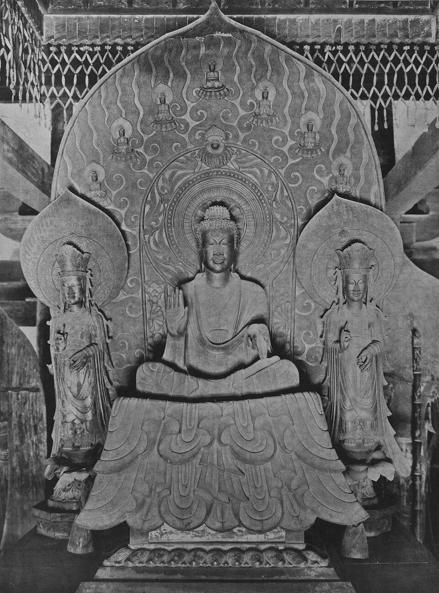
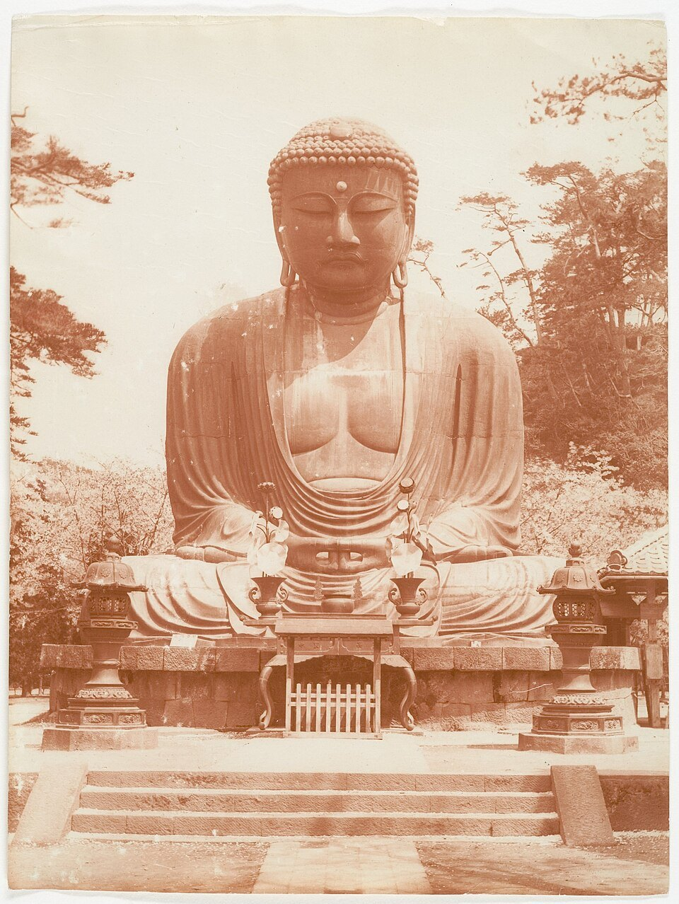
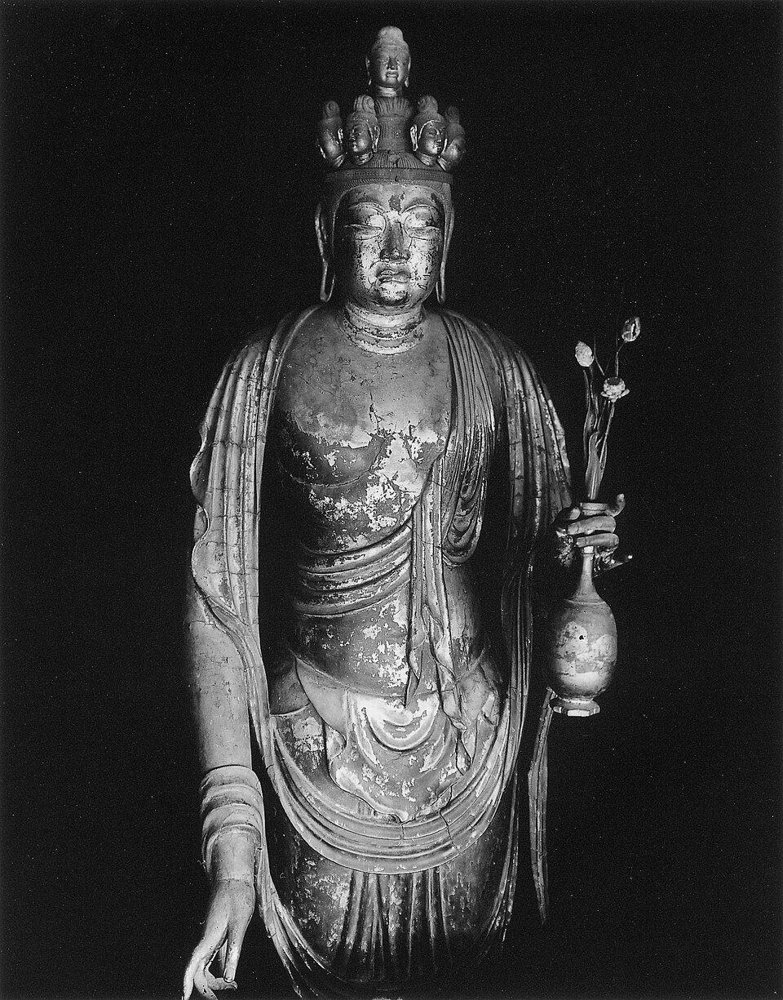
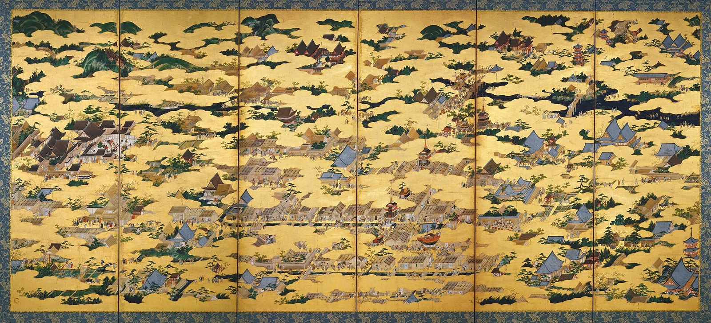

図解：仏像のかたちと作品名の読み方
素材と技法の移り変わり（造仏方法の大きな流れ）
重要用語
仏像のかたち
- 如来にょらい悟りを開いた仏
- 肉髻にっけい如来の頭頂の盛り上がり
- 螺髪らほつ如来の頭髪
- 白毫びゃくごう如来や菩薩の眉間にある、右巻きの白い毛
- 三尊像さんぞんぞう中央の本尊と左右の二体の脇侍で構成される仏像の形式
- 脇侍きょうじ三尊像で本尊の左右に従う仏
- 丈六じょうろく仏像の大きさの基準
- 光背こうはい仏の背後に表される光明
- 蓮華座れんげざ蓮の花をかたどった台座
- 瑟瑟座しつしつざ岩を角材を積み重ねたように意匠化した台座
印相
- 印相いんぞう仏像の手や指の形
- 禅定印ぜんじょういん腹の前で両手を上向きに重ね、親指の先を合わせる印
- 施無畏印せむいいん右手を胸の高さに上げ、手のひらを前に向ける印
- 与願印よがんいん左手を下げ、手のひらを前に向ける印
- 降魔印ごうまいん右手を下に伸ばし、指先で地面に触れる印
- 説法印せっぽういん両手を胸の前に上げ、親指と他の指で輪を作る印
造仏方法・作品名
仏像のかたち
如来形の各部の名称
書籍 p.268一口に仏像といっても、尊格の種類や形はさまざまである。仏像は大きく如来・菩薩・明王・天の四つの部類に分けられ、悟りを開いた仏である如来は、装身具を着けず、一枚の布をまとっただけの出家者の姿で表される。この姿を如来形（にょらいぎょう）と呼ぶ。
如来の頭頂は髷のように盛り上がっており、これを肉髻という。その前に付く赤い珠が肉髻珠、髪の毛が右巻きの小さな粒になったものが螺髪である。眉間には右巻きの白い毛を表す白毫があり、首には三本のしわ（三道）が刻まれる。体には衲衣（のうえ）をまとい、手は印相を結び、両足を組んだ結跏趺坐（けっかふざ）で蓮華座に座る。
 画像を拡大 ＋
画像を拡大 ＋
《阿弥陀如来坐像》
- 作者
- 定朝
- 制作時期
- 1053年（平安時代）
- 所在地・所蔵
- 平等院鳳凰堂（京都府宇治市）
- 素材・形式
- 木造漆箔・寄木造
出典・画像について
光背には雲に乗る飛天、天蓋の下に定印を結ぶ阿弥陀が座る。写真は1910年刊行の図録から。
画像出典：Wikimedia Commons
Public domain
作品情報：画像出典・作品情報（Commons）
三尊像と脇侍
書籍 p.268中央の本尊の左右に二体の脇侍を従えた形式を三尊像という。法隆寺金堂の《釈迦三尊像》は、623年に止利仏師が造った止利様式の代表作で、大きな一つの光背（舟形光背）が三体を包んでいる。脇侍の菩薩は、如来とは違って宝冠をかぶり、垂髪（すいはつ）を肩に垂らし、胸飾や腕釧（わんせん、腕輪）などの装身具を着け、天衣（てんね）をまとう。本尊の台座からは衣の裾が垂れ下がっており、これを裳懸座（もかけざ）の懸裳（けんも）という。


画像を拡大 ＋《釈迦三尊像》
- 作者
- 止利仏師（鞍作止利）
- 制作時期
- 623年（飛鳥時代）
- 所在地・所蔵
- 法隆寺金堂（奈良県斑鳩町）
- 素材・形式
- 銅造鍍金
出典・画像について
大きさのルール：丈六
書籍 p.268仏像の大きさは、大仏から手のひらに乗るような像までさまざまである。しかし、経典などにある寸法を基準として造られている。基準になるのが丈六で、釈迦の身長が一丈六尺（約4.8m）あったという伝えに由来する。立像なら約4.8m、坐像ならその半分の約2.4mの像が丈六像である。高さは肉髻の下から測る。日本では飛鳥寺の本尊（飛鳥大仏）を丈六像の基準としている。
丈六の10倍以上の像が大仏、2分の1が半丈六、4分の1が等身と呼ばれる。奈良の東大寺大仏は座高約15m、鎌倉大仏は約11mある。

《銅造釈迦如来坐像（飛鳥大仏）》
- 作者
- 止利仏師と伝える
- 制作時期
- 609年（飛鳥時代）
- 所在地・所蔵
- 飛鳥寺（奈良県明日香村）
- 素材・形式
- 銅造
出典・画像について


画像を拡大 ＋《銅造阿弥陀如来坐像（鎌倉大仏）》
- 作者
- 作者不詳
- 制作時期
- 13世紀中頃（鎌倉時代）
- 所在地・所蔵
- 高徳院（神奈川県鎌倉市）
- 素材・形式
- 銅造
出典・画像について
光背と台座
書籍 p.268仏像が背負っているように見える背景を光背と呼ぶ。如来のまわりが光り輝くさまを表すが、尊格の種類や性格によって意匠化され、さまざまな形式がある。大きく分けると、頭の後ろの頭光と、体全体を包む挙身光（身光）がある。法隆寺の釈迦三尊像のように舟の形をした舟形光背、平等院の阿弥陀如来のように飛天を配した飛天光背、不動明王の炎をかたどった火焔光背などが知られる。
台座も尊格や役割によって異なる。蓮の花をかたどった蓮華座は如来と菩薩によく用いられ、岩を意匠化した瑟瑟座は不動明王に使われる。天部の像は、邪鬼を踏みつける姿で表されることが多い。
| 部類 | 姿 | 主な例 |
|---|---|---|
| 如来 | 出家者の姿。装身具なし、螺髪・肉髻 | 釈迦・阿弥陀・薬師・大日（大日は宝冠を着ける例外） |
| 菩薩 | 出家前の王子の姿。宝冠・装身具・天衣 | 観音・弥勒・地蔵（地蔵は僧形） |
| 明王 | 怒りの表情（忿怒相）、火焔光背 | 不動明王・愛染明王 |
| 天 | 武将や貴人の姿。邪鬼を踏む | 四天王・梵天・帝釈天・阿修羅 |
いろいろな印相
書籍 p.269前の章の仏像の各部にも出てきた印相とは、仏像の手や指の形で、仏の悟りの内容を表すものである。如来形では、禅定印、施無畏印、降魔印、与願印、説法印などを結んだものが多い。どの印を結んでいるかは、尊像の名前を見分ける手がかりにもなる。
| 印相 | 手の形 | 意味・作例 |
|---|---|---|
| 禅定印 | 腹の前で両手を上向きに重ね、親指の先を合わせる | 瞑想・精神統一。鎌倉大仏や平等院の阿弥陀如来は、これに指で輪を作った阿弥陀定印 |
| 施無畏印 | 右手を上げ、手のひらを前に向ける | 恐れを取り除く。法隆寺釈迦三尊像の右手 |
| 与願印 | 左手を下げ、手のひらを前に向ける | 願いをかなえる。施無畏印と組み合わせる（施無畏・与願印） |
| 降魔印 | 右手の指先を下に伸ばし、地面に触れる | 悟りを妨げる魔を退ける。触地印ともいう |
| 説法印 | 胸の前で両手の親指と他の指で輪を作る | 教えを説く。転法輪印ともいう |
法隆寺の釈迦三尊像の本尊は、右手で施無畏印、左手で与願印を結んでいる（前章の図版）。鎌倉大仏は膝の上で両手を組み、人さし指と親指で輪を作る阿弥陀の定印を結ぶ。
造仏方法
塑像と乾漆像
書籍 p.269塑像は、土台の板に立てた木の心木（しんぎ）に荒縄を巻き付け、粗い土から細かい仕上げ土へと粘土を盛り重ねて形を作る。腕などには細い芯を入れる。細かい表現がしやすく、奈良時代に盛んに造られた。東大寺戒壇堂の《四天王立像》は、天平の塑像の傑作である。
乾漆像は漆を使って造る像で、奈良時代に流行した。脱活乾漆は、粘土で原型を作り、その上に麻布を漆で何層にも貼り重ねて固めたのち、中の土を取り出して木の枠組み（木組）で補強する。中が空洞なので軽い。表面は木屎漆（こくそうるし）で細部を整える。興福寺の《阿修羅像》が代表例である。木心乾漆は、木彫りで大まかな形を作った芯に、木屎漆を盛り付けて仕上げる技法で、奈良時代後期に多くなる。聖林寺の《十一面観音立像》がよく知られる。

《四天王立像 持国天》
- 作者
- 作者不詳
- 制作時期
- 8世紀中頃（奈良時代）
- 所在地・所蔵
- 東大寺戒壇堂（奈良市）
- 素材・形式
- 塑造
出典・画像について

《阿修羅像（八部衆のうち）》
- 作者
- 作者不詳
- 制作時期
- 734年（奈良時代）
- 所在地・所蔵
- 興福寺（奈良市）
- 素材・形式
- 脱活乾漆造
出典・画像について


画像を拡大 ＋《十一面観音立像》
- 作者
- 作者不詳
- 制作時期
- 8世紀後半（奈良時代）
- 所在地・所蔵
- 聖林寺（奈良県桜井市）
- 素材・形式
- 木心乾漆造
出典・画像について
金銅仏
書籍 p.269金銅仏は、銅で鋳造したうえで表面に金メッキ（鍍金）を施した仏像である。まず土で中型（なかご）を作り、その上を蝋で覆って像の形を彫り、さらに外側を土の外型で包む。鉄釘で中型と外型を固定してから加熱し、溶けた蝋を流し出した隙間に溶けた銅を流し込む。冷えたら型を壊して取り出し、表面を仕上げて鍍金する。飛鳥時代の仏像の多くは金銅仏で、法隆寺の釈迦三尊像や飛鳥大仏がその例である。奈良時代には東大寺の大仏のような巨大な像も鋳造された。
一木造と寄木造
書籍 p.269一木造は、像の頭と胴体の主な部分を一本の木から彫り出す技法である。平安時代前期に盛んになり、量感のある重厚な像が多い。木が乾燥して割れるのを防ぐため、背中などから内部をくり抜く内刳りが施される。神護寺の《薬師如来立像》は、厳しい表情と量感で知られる平安初期の一木造の代表作である。
寄木造は、頭部と体を複数の木材に分けて彫り、それを組み合わせて一体の像にする技法である。平安時代後期に仏師定朝が完成させた。部材ごとに分担して彫れるので、工房での分業や大きな像の制作が容易になり、内刳りも徹底できる。定朝作と確実にわかる唯一の像が、平等院鳳凰堂の《阿弥陀如来坐像》（1053年）で、穏やかで円満な表情の「定朝様」は、その後の仏像の手本となった。

《薬師如来立像》
- 作者
- 作者不詳
- 制作時期
- 8世紀末〜9世紀初め（平安時代前期）
- 所在地・所蔵
- 神護寺（京都市右京区）
- 素材・形式
- 木造・一木造
出典・画像について
試験の目のつけどころ 「一木造＝平安前期」「寄木造＝平安後期・定朝」の対応が頻出。一つの材を前後に割って内刳りしてから接ぎ合わせる割矧造（わりはぎづくり）も、平安後期以降に広まった技法として押さえておきたい。
作品名の読み方
作品名はなにを表すのか
書籍 p.270日本の美術品には、もともと名前が付いていないものがたくさんある。現在の作品名は、ほかの作品と区別するために、テーマや画材、技法、形などを組み合わせて後から付けられたものが多い。組み立てのルールを知っておくと、初めて見る作品名からでも、どんな作品なのかをおおよそ思い描けるようになる。
絵画 Example 1
絵画 Example 2


画像を拡大 ＋《洛中洛外図屏風（上杉本）右隻》
- 作者
- 狩野永徳
- 制作時期
- 16世紀後半（安土桃山時代）
- 所在地・所蔵
- 米沢市上杉博物館（山形県）
- 素材・形式
- 紙本金地著色・六曲一双
出典・画像について
京都の市中（洛中）と郊外（洛外）を描いた屏風。テーマ＋図＋仕立ての形式という名前の組み立てがわかりやすい例。
画像出典：Wikimedia Commons
Public domain
作品情報：画像出典・作品情報（Commons）
仏像 Example 3
仏像の名前は「尊格の名前＋形態（立像・坐像・倚像など）」が基本で、前に素材や技法が付くこともある。たとえば「木造阿弥陀如来坐像」なら、木で造った阿弥陀如来の坐った像という意味になる。
工芸 Example 4
工芸 Example 5
染色 Example 6
絵画の場合は、さらに頭に支持体と画法が付くことがある。「紙本著色」「絹本墨画」のような表記で、紙本・絹本はT003 日本絵画の画材・表装・技法で見た支持体の種類を示す。工芸では、貝殻を薄く削って器物にはめ込む螺鈿（らでん）、漆で描いた文様に金粉を蒔く蒔絵、器の一部を切り抜いて透かす透彫（すかしぼり）など、技法の名前が作品名の中に入っている。
要点まとめ
- 如来形は出家者の姿。頭頂の肉髻、粒状の螺髪、眉間の白毫、首の三道、衲衣、印相、結跏趺坐、蓮華座が各部の名称。
- 三尊像は本尊と左右の脇侍で構成される。法隆寺金堂の釈迦三尊像（623年）は止利様式の代表作。
- 丈六は立像で約4.8m、坐像で約2.4m。日本では飛鳥寺の本尊が基準。
- 光背は頭光と挙身光（身光）に分かれる。蓮華座は如来・菩薩、瑟瑟座は不動明王。
- 印相は手の形で悟りの内容を表す。禅定印・施無畏印・与願印・降魔印・説法印が基本。
- 造仏方法は金銅仏（飛鳥）→塑像・乾漆像（奈良）→一木造（平安前期）→寄木造（平安後期・定朝）と移り変わった。
- 日本美術の作品名は、テーマ・作品ジャンル・技法・形態などを組み合わせて後から付けられたものが多い。
確認問題
選択問題：0／3問回答・正解0
A. 一問一答
問1如来の眉間にある、右巻きの白い毛を表したものを何というか。
答えを見る
問2立像で約4.8m、坐像で約2.4mの仏像を何というか。
答えを見る
問3岩を意匠化した、不動明王に使われる台座を何というか。
答えを見る
B. 4択
問4寄木造を完成させた平安時代後期の仏師は誰か。
→ 本文で確認（一木造と寄木造）
問5右手を上げて手のひらを前に向け、人々の恐れを取り除くことを表す印相はどれか。
→ 本文で確認（いろいろな印相）
問6粘土で原型を作り、麻布を漆で貼り重ねてから中の土を取り出す、中が空洞の造仏方法はどれか。
→ 本文で確認（塑像と乾漆像）
C. 図版問題
問7この像の造仏方法は何か。
答えを見る
問8寄木造で造られ、「定朝様」の手本となったこの像はどこにあるか。